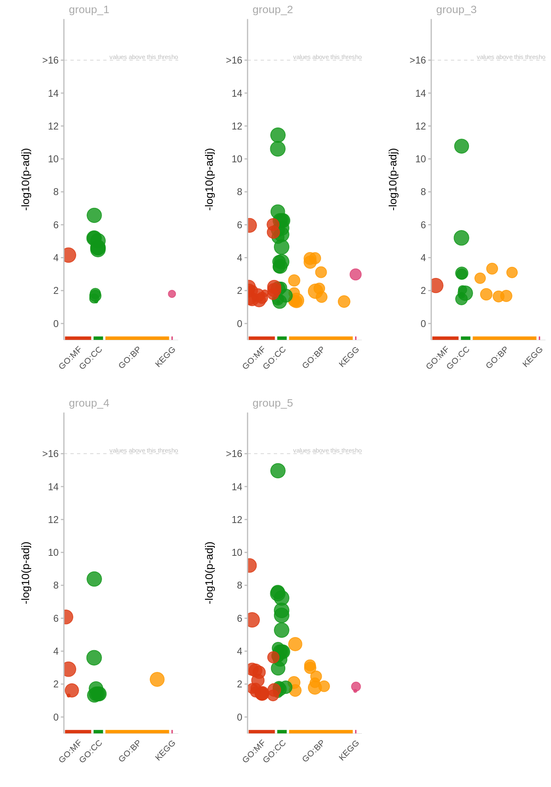
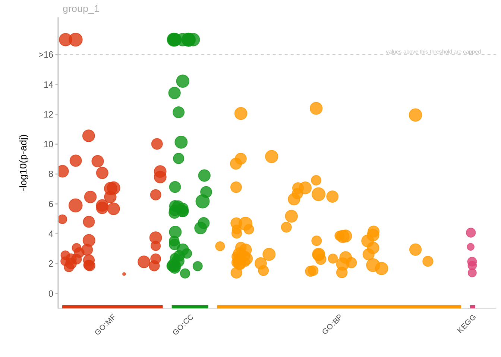

[1] "No enrichment found in any groups using ~1000 heatmap genes as background."Figure 2 - Heatmap of unprodoctive splicing by tissues
figures
manuscript
Heatmap of PSI of unproductive splicing for introns that are commonly differentially spliced across tissues.
Notes
- Use GTEx dataset
Heatmap with 5 clusters
GO enrichment
GO enrichment on the 5 clusters shown in the heatmap above. The 5 clusters of intron-clusters represent 1197 genes. I used gprofiler2 to run GO enrichment on each of these 12 sets of genes against GO terms in GO:BP, GO:MF, GO:CC, and KEGG.
Using the 1197 genes as background didn’t yield any significant enrichment. But there is enrichment when using all human genes as background. as. shown in Table 1 . P-values are multiple testing corrected using gprofiler2’s internal method.
Enrichment test using heatmap genes as background
Enrichment test using whole genome as background
p-value in the table below is multiple testing corrected using gprofiler2’s internal method.
[1] "These clusters have enrichment in GO terms"[1] "1" "2" "3" "4" "5"

Enrichment test of using whole genome as backgrounda with all clusters combined
p-value in the table below is multiple testing corrected using gprofiler2’s internal method.
